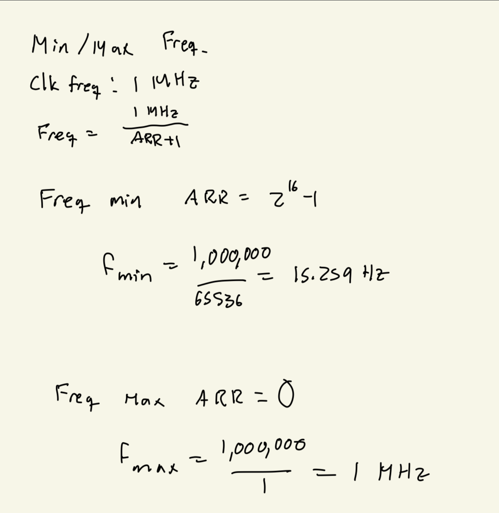

Lab 4: Digital Audio
Introduction
The goal of this lab is to use our STM32L432KC to drive audio on a speaker and be able to play music. This will be done using an LM386 audio amplifier and a potentiometer to control the volume, as well as software using C.
MCU Design
Objective
The objective of this lab is to understand how to read the STM32L432KC to drive different clocks and play different frequencies of sound on our MCU. Using the data sheet to understand how to drive our MCU is key here.
Design
To design with software for this lab, I utilized two different timers. I used TIM16 due to its PWM functionality to output the correct frequency, and used TIM6, due to its simple design to set a delay between when the frequencies should be switched to play the notes for the right amount of time. For both of these timers, I used MSI as my system clock as it is the default clock running at 4 MHz. For both TIM16 and TIM6, I scaled down the timers to a slower frequency to be able to run the range of frequencies that I wanted, and the range of delays that I wanted.
Headers
To be able to utilize the TIM16 and TIM6 timers, I needed to create header files to include the memory locations of each register. For RCC, FLASH, GPIO, I used the preexisting ones provided in class. The TIM16 and TIM6 header files are as shown below:
TIM16 Header File
// Christian Wu
// chrwu@g.hmc.edu
// 09/19/25
// STM32L432KC_TIM16.h
// Header for TIM16 functions
#ifndef STM32L4_TIM16_H
#define STM32L4_TIM16_H
#include <stdint.h>
///////////////////////////////////////////////////////////////////////////////
// Definitions
///////////////////////////////////////////////////////////////////////////////
#define __IO volatile
// Base addresses for GPIO ports
#define TIM16_BASE (0x40014400) // base address of TIM16
///////////////////////////////////////////////////////////////////////////////
// Bitfield struct for GPIO
///////////////////////////////////////////////////////////////////////////////
typedef struct {
__IO uint32_t TIM16_CR1; /*!< TIM16 control register 1, Address offset: 0x00 */
__IO uint32_t TIM16_CR2; /*!< TIM16 control register 2, Address offset: 0x04 */
uint32_t RESERVED0; /*!< Reserved, Address offset: 0x08 */
__IO uint32_t TIM16_DIER; /*!< TIM16 DMA/Interrupt Enable Register, Address offset: 0x0C */
__IO uint32_t TIM16_SR; /*!< TIM16 Status Register, Address offset: 0x10 */
__IO uint32_t TIM16_EGR; /*!< TIM16 Event Generation Register, Address offset: 0x14 */
__IO uint32_t TIM16_CCMR1; /*!< TIM16 Capture/Compare Mode Register 1, Address offset: 0x18 */
uint32_t RESERVED1; /*!< Reserved, Address offset: 0x1C */
__IO uint32_t TIM16_CCER; /*!< TIM16 Capture/Compare Enable Register, Address offset: 0x20 */
__IO uint32_t TIM16_CNT; /*!< TIM16 Counter, Address offset: 0x24 */
__IO uint32_t TIM16_PSC; /*!< TIM16 Prescaler, Address offset: 0x28 */
__IO uint32_t TIM16_ARR; /*!< TIM16 Auto-Reload Register, Address offset: 0x2C */
__IO uint32_t TIM16_RCR; /*!< TIM16 Repetition Counter Register, Address offset: 0x30 */
__IO uint32_t TIM16_CCR1; /*!< TIM16 Capture/Compare Register 1, Address offset: 0x34 */
uint32_t RESERVED2; /*!< Reserved, Address offset: 0x38 */
uint32_t RESERVED3; /*!< Reserved, Address offset: 0x3C */
uint32_t RESERVED4; /*!< Reserved, Address offset: 0x40 */
__IO uint32_t TIM16_BDTR; /*!< TIM16 Break and Dead-Time Register, Address offset: 0x44 */
__IO uint32_t TIM16_DCR; /*!< TIM16 DMA Control Register, Address offset: 0x48 */
__IO uint32_t TIM16_DMAR; /*!< TIM16 DMA Address For Full Transfer, Address offset: 0x4C */
__IO uint32_t TIM16_OR1; /*!< TIM16 Option Register 1, Address offset: 0x50 */
uint32_t RESERVED5; /*!< Reserved, Address offset: 0x54 */
uint32_t RESERVED6; /*!< Reserved, Address offset: 0x58 */
uint32_t RESERVED7; /*!< Reserved, Address offset: 0x5C */
__IO uint32_t TIM16_OR2; /*!< TIM16 Option Register 2, Address offset: 0x60 */
} TIM16_TypeDef;
#define TIM16 ((TIM16_TypeDef *) TIM16_BASE)
///////////////////////////////////////////////////////////////////////////////
// Function prototypes
///////////////////////////////////////////////////////////////////////////////
void configureTIM16();
void setPWM(int frequency, int dutyCycle);
#endifTIM 6 Header File
// Christian Wu
// chrwu@g.hmc.edu
// 09/19/25
// STM32L432KC_TIM6.h
// Header for TIM6 functions
#ifndef STM32L4_TIM6_H
#define STM32L4_TIM6_H
#include <stdint.h>
///////////////////////////////////////////////////////////////////////////////
// Definitions
///////////////////////////////////////////////////////////////////////////////
#define __IO volatile
// Base addresses for GPIO ports
#define TIM6_BASE (0x40001000UL) // base address of TIM6
///////////////////////////////////////////////////////////////////////////////
// Bitfield struct for GPIO
///////////////////////////////////////////////////////////////////////////////
typedef struct {
__IO uint32_t TIM6_CR1; /*!< TIM6 control register 1, Address offset: 0x00 */
__IO uint32_t TIM6_CR2; /*!< TIM6 control register 2, Address offset: 0x04 */
uint32_t RESERVED0; /*!< Reserved, Address offset: 0x08 */
__IO uint32_t TIM6_DIER; /*!< TIM6 DMA/Interrupt Enable Register, Address offset: 0x0C */
__IO uint32_t TIM6_SR; /*!< TIM6 Status Register, Address offset: 0x10 */
__IO uint32_t TIM6_EGR; /*!< TIM6 Event Generation Register, Address offset: 0x14 */
uint32_t RESERVED1; /*!< Reserved, Address offset: 0x18 */
uint32_t RESERVED2; /*!< Reserved, Address offset: 0x1C */
uint32_t RESERVED3; /*!< Reserved, Address offset: 0x20 */
__IO uint32_t TIM6_CNT; /*!< TIM6 Counter, Address offset: 0x24 */
__IO uint32_t TIM6_PSC; /*!< TIM6 Prescaler, Address offset: 0x28 */
__IO uint32_t TIM6_ARR; /*!< TIM6 Auto-Reload Register, Address offset: 0x2C */
} TIM6_TypeDef;
#define TIM6 ((TIM6_TypeDef *) TIM6_BASE)
///////////////////////////////////////////////////////////////////////////////
// Function prototypes
///////////////////////////////////////////////////////////////////////////////
void configureTIM6();
void setDelay(int ms);
#endifTIM16 Design
For TIM16, I wanted to run it at 1 MHz, so I set the prescaler to 3. This is because $CK_{CNT} = f_{CK_PSC} / ( + 1), so \(CK_{CNT}\) = 4 MHz / (3 + 1) = 1 MHz. The reason for the plus one is because it takes one clock tick for the counter to start after setting the CEN bit in the CR1 register. Below is a screenshot from the reference manual to show this:
To obtain the right frequency to output, we need to set a value of ARR. ARR correlates to the output frequency in the following way: \(f_{out} = f_{in} / (\text{ARR} + 1)\). Thus, we can solve for ARR based on our desired frequency: \(\text{ARR} = (1000000 / f_{desired}) - 1\). Thus, I can now calculate my maximum and minimum frequencies. We know from the reference manual that ARR ranges between 0 and 65535, as it is a 16 bit register:
Thus, we can calculate the maximum and minimum supported frequencies

To actually play the frequencies, I created a setPWM function, which took in inputs of frequency and duty cycle. The code for TIM16 is below:
// Christian Wu
// chrwu@g.hmc.edu
// 09/19/25
// Code to utilize TIM16 for PWM
#include "../lib/STM32L432KC_TIM16.h"
#include "../lib/STM32L432KC_RCC.h"
void configureTIM16() {
// Set Clock to 4 MHz
// Enable GPIO A
RCC->AHB2ENR |= (1 << 0);
// Enable TIM16
RCC->APB2ENR |= (1 << 17);
// Use prescaler to set clock to 1 MHz in TIM16_PSC
TIM16->TIM16_PSC = 3;
// Set Auto Reload Register in TIM16_ARR
TIM16->TIM16_ARR = 0xFFFF;
// Set PWM Mode in TIM16_CCMR1
TIM16->TIM16_CCMR1 &= ~(0b111 << 4); // Clear OC1M[6:4] bits
TIM16->TIM16_CCMR1 |= (0b110 << 4); // Set PWM Mode 1 (110)
TIM16->TIM16_CCMR1 |= (1 << 3); // Set OC1PE (preload enable)
TIM16->TIM16_CCMR1 &= ~(0b11 << 0); // Clear CC1S (output mode)
// Set the auto-reload preload enable in TIM16_CR1
TIM16->TIM16_CR1 |= (1 << 7);
// Set output enable in TIM16_CCER
TIM16->TIM16_CCER |= (1 << 0);
// Set main output enable in TIM16_BDTR
TIM16->TIM16_BDTR |= (1 << 15);
// Set Capture/compare register in TIM16_CCR1
TIM16->TIM16_CCR1 = 0;
// Set update generation bit in TIM16_EGR
TIM16->TIM16_EGR |= (1 << 0);
// Set timer counter enable in TIM16_CR1
TIM16->TIM16_CR1 |= (1 << 0);
}
void setPWM(int frequency, int dutyCycle) {
// Set ARR values as a variable
uint32_t arr_value = (1000000 / frequency) - 1;
// Set ARR in TIM16_ARR
TIM16->TIM16_ARR = arr_value;
// Set Duty Cycle in TIM16_CCR1
TIM16->TIM16_CCR1 = (arr_value + 1) * dutyCycle/100;
// Set update generation bit in TIM16_EGR
TIM16->TIM16_EGR |= (1 << 0);
}TIM6 Design
I used TIM6 for its simplicity to create a delay in milliseconds. This would determine when notes should be switched, as it always happens after the delay ends. I used a PSC value of 3999 to set the clock to 1 kHz. This is still utilizing $CK_{CNT} = f_{CK_PSC} / ( + 1), so \(CK_{CNT}\) = 4 MHz / (3999 + 1) = 1 kHz. ARR correlates to the timer delay in the following way: \(T_{delay} = (\text{ARR} + 1) / CK_{CNT}\). Thus, we can solve for ARR based on our desired frequency: \(\text{ARR} = (100 * T_{delay}) - 1\). Thus, I can now calculate my maximum and minimum durations:

To set the delays, I create a setDelay function, which can be seen in my TIM6.c code below:
// Christian Wu
// chrwu@g.hmc.edu
// 09/19/25
// Code to utilize TIM6 for delays
#include "../lib/STM32L432KC_TIM6.h"
#include "../lib/STM32L432KC_RCC.h"
void configureTIM6() {
// Set clock to 4 MHz
RCC->APB1ENR1 |= (1 << 4);
// Set clock to 1 kHz
TIM6->TIM6_PSC = 3999;
// Set the auto-reload preload enable in TIM16_CR1
TIM6->TIM6_CR1 |= (1 << 7);
// Set update generation bit in TIM16_EGR
TIM6->TIM6_EGR |= (1 << 0);
}
void setDelay(int ms) {
// Set auto-reload registers in TIM6_ARR
TIM6->TIM6_ARR = ms - 1;
// Set update generation bit in TIM16_EGR
TIM6->TIM6_EGR |= (1 << 0);
// Clear UIF in TIM6_SR
TIM6->TIM6_SR &= ~(1 << 0);
// Reset Count in TIM6_CNT
TIM6->TIM6_CNT = 0;
// Set timer counter enable in TIM16_CR1
TIM6->TIM6_CR1 |= (1 << 0);
while(!(TIM6->TIM6_SR & 1)){
}
// Clear UIF in TIM6_SR
TIM6->TIM6_SR &= ~(1 << 0);
}Main Code File
To tie everything together and actually run my code on the MCU, I had a main.c file. I first configured my two timers, and then used for loops to play each of the songs, Fur Elise and Twinkle Twinkle Little Star. I utilized my setPWM function to change frequencies after setDelay finished. My code is as shows below:
// Christian Wu
// chrwu@g.hmc.edu
// 09/19/25
// Main lab code to program onto MCU
#include "../lib/STM32L432KC_FLASH.h"
#include "../lib/STM32L432KC_GPIO.h"
#include "../lib/STM32L432KC_RCC.h"
#include "../lib/STM32L432KC_TIM16.h"
#include "../lib/STM32L432KC_TIM6.h"
// Pitch in Hz, duration in ms
const int notes[][2] = {
{659,125},{623,125},{659,125},{623,125},{659,125},{494,125},{587,125},{523,125},{440,250},{0,125},{262,125},{330,125},{440,125},{494,250},
{0,125},{330,125},{416,125},{494,125},{523,250},{0,125},{330,125},{659,125},{623,125},{659,125},{623,125},{659,125},{494,125},{587,125},
{523,125},{440,250},{0,125},{262,125},{330,125},{440,125},{494,250},{0,125},{330,125},{523,125},{494,125},{440,250},{0,125},{494,125},
{523,125},{587,125},{659,375},{392,125},{699,125},{659,125},{587,375},{349,125},{659,125},{587,125},{523,375},{330,125},{587,125},{523,125},
{494,250},{0,125},{330,125},{659,125},{0,250},{659,125},{1319,125},{0,250},{623,125},{659,125},{0,250},{623,125},{659,125},{623,125},{659,125},
{623,125},{659,125},{494,125},{587,125},{523,125},{440,250},{0,125},{262,125},{330,125},{440,125},{494,250},{0,125},{330,125},{416,125},
{494,125},{523,250},{0,125},{330,125},{659,125},{623,125},{659,125},{623,125},{659,125},{494,125},{587,125},{523,125},{440,250},{0,125},
{262,125},{330,125},{440,125},{494,250},{0,125},{330,125},{523,125},{494,125},{440,500},{0,0}
};
// Twinkle Twinkle Little Star
// Pitch in Hz, duration in ms
const int ttls_notes[][2] = {
{262, 125}, {0, 50}, {262, 125}, {0, 50}, {392, 125}, {0, 50}, {392, 125}, {0, 50}, {440, 125}, {0, 50}, {440, 125}, {0, 50}, {392, 250}, {0, 50}, // C C G G A A G
{349, 125}, {0, 50}, {349, 125}, {0, 50}, {330, 125}, {0, 50}, {330, 125}, {0, 50}, {294, 125}, {0, 50}, {294, 125}, {0, 50}, {262, 250}, {0, 50}, // F F E E D D C
{392, 125}, {0, 50}, {392, 125}, {0, 50}, {349, 125}, {0, 50}, {349, 125}, {0, 50}, {330, 125}, {0, 50}, {330, 125}, {0, 50}, {294, 250}, {0, 50}, // G G F F E E D
{392, 125}, {0, 50}, {392, 125}, {0, 50}, {349, 125}, {0, 50}, {349, 125}, {0, 50}, {330, 125}, {0, 50}, {330, 125}, {0, 50}, {294, 250}, {0, 50}, // G G F F E E D
{262, 125}, {0, 50}, {262, 125}, {0, 50}, {392, 125}, {0, 50}, {392, 125}, {0, 50}, {440, 125}, {0, 50}, {440, 125}, {0, 50}, {392, 250}, {0, 50}, // C C G G A A G
{349, 125}, {0, 50}, {349, 125}, {0, 50}, {330, 125}, {0, 50}, {330, 125}, {0, 50}, {294, 125}, {0, 50}, {294, 125}, {0, 50}, {262, 500}, // F F E E D D C
{0, 0}
};
int main(void) {
configureTIM16(); // PWM
configureTIM6(); // Delay
pinMode(6, GPIO_ALT);
GPIO->AFRL &= ~(0xF << 24); // Clear bits [27:24] for pin 6
GPIO->AFRL |= (14 << 24); // Set to AF14 for TIM16_CH1
for (int i = 0; i < sizeof(notes)/sizeof(notes[0]); i++){
setPWM(notes[i][0], 50);
setDelay(notes[i][1]);
}
for (int i = 0; i < sizeof(ttls_notes)/sizeof(ttls_notes[0]); i++){
setPWM(ttls_notes[i][0], 50);
setDelay(ttls_notes[i][1]);
}
}Hardware
Design and Schematic
After finishing with testing, I can now build my hardware and program my MCU. I only have one pin output for my speaker and I am using PA6 since it utilizes TIM16 in AF14.
Below, is my schematic:
LM386 Low Voltage Audio Power Amplifier I used an LM386 Low Voltage Audio Power Amplifier to drive a stronger audio signal from my PA6 pin output to my 8 Ohm Speaker by increasing the current. Using the default setup with no capacitor between pins 1 & 8, the gain would be 20. AC coupling was not needed from amplifier to speaker to produce acceptable square waves. This amplifier was hooked up to a 5 V supply from the MCU.
Potentiometer I chose to use a 2k Ohm Potentiometer as it would lower the volume of the speaker and be able to control the output volume but not make the volume output too low as some of the speakers that I used were not very loud/powerful.
Results
After creating my Segger project and uploading the code to my MCU, I was successfully able to play Fur Elise and Twinkle Twinkle Little Star. To make sure that my frequency outputs were accurate to within 1% error, I used an oscilloscope to measure the actual output frequencies for 220, 300, 400, 500, 600, 700, 800, 900, and 1000 Hz. Below are the oscilloscope traces and the percent error, which is within 1%:
220 Hz Measured Frequency
Using an oscilloscope to measure the actual output frequency of 220 Hz, I got 219 Hz, which corresponds to a 0.45 % error. Theoretically, I should be getting ARR to be 1000000/220 - 1 = 4544. Thus, the output frequency should be 1000000/4545 = 220.02 Hz, which is 0.01% error.
300 Hz Measured Frequency
Using an oscilloscope to measure the actual output frequency of 300 Hz, I got 299 Hz, which corresponds to a 0.33 % error. Theoretically, I should be getting ARR to be 1000000/300 - 1 = 3332. Thus, the output frequency should be 1000000/3333 = 300.03 Hz, which is 0.01% error.
400 Hz Measured Frequency
Using an oscilloscope to measure the actual output frequency of 400 Hz, I got 397 Hz, which corresponds to a 0.75 % error. Theoretically, I should be getting ARR to be 1000000/400 - 1 = 2499. Thus, the output frequency should be 1000000/2500 = 400.00 Hz, which is 0.00% error.
500 Hz Measured Frequency
Using an oscilloscope to measure the actual output frequency of 500 Hz, I got 500 Hz, which corresponds to a 0 % error. Theoretically, I should be getting ARR to be 1000000/500 - 1 = 1999. Thus, the output frequency should be 1000000/2000 = 500.00 Hz, which is 0.00% error.
600 Hz Measured Frequency
Using an oscilloscope to measure the actual output frequency of 600 Hz, I got 595 Hz, which corresponds to a 0.83 % error. Theoretically, I should be getting ARR to be 1000000/600 - 1 = 1665. Thus, the output frequency should be 1000000/1666 = 600.24 Hz, which is 0.04% error.
700 Hz Measured Frequency
Using an oscilloscope to measure the actual output frequency of 700 Hz, I got 699 Hz, which corresponds to a 0.14 % error. Theoretically, I should be getting ARR to be 1000000/700 - 1 = 1427. Thus, the output frequency should be 1000000/1428 = 700.28 Hz, which is 0.04% error.
800 Hz Measured Frequency
Using an oscilloscope to measure the actual output frequency of 800 Hz, I got 806 Hz, which corresponds to a 0.75 % error. Theoretically, I should be getting ARR to be 1000000/800 - 1 = 1249. Thus, the output frequency should be 1000000/1250 = 800.00 Hz, which is 0.00% error.
900 Hz Measured Frequency
Using an oscilloscope to measure the actual output frequency of 900 Hz, I got 893 Hz, which corresponds to a 0.78 % error. Theoretically, I should be getting ARR to be 1000000/900 - 1 = 1110. Thus, the output frequency should be 1000000/1111 = 900.09 Hz, which is 0.01% error.
1000 Hz Measured Frequency
Using an oscilloscope to measure the actual output frequency of 1000 Hz, I got 1000 Hz, which corresponds to a 0 % error. Theoretically, I should be getting ARR to be 1000000/1000 - 1 = 999. Thus, the output frequency should be 1000000/1000 = 1000.00 Hz, which is 0.00% error.
Demo Video
Here is a video demoing my project working successfully:
As a result, my design and project has met all the requirements for this lab.
AI Prototype
Prompt
To test how AI would do for this lab, I entered the following prompt to ChatGPT:
What timers should I use on the STM32L432KC to generate frequencies ranging from 220Hz to 1kHz? What’s the best choice of timer if I want to easily connect it to a GPIO pin? What formulae are relevant, and what registers need to be set to configure them properly?AI Response
As a result, it returned the following response:
1. Which timers are available on STM32L432KC?
The L432KC has several general-purpose and advanced timers:
TIM1 (advanced-control, 16-bit, with complementary PWM outputs, dead-time insertion, etc.)
TIM2 (general-purpose, 32-bit)
TIM15, TIM16, TIM17 (general-purpose, 16-bit, simpler)
For generating output frequencies between 220 Hz and 1 kHz on a GPIO pin, you want:
Something that easily routes to GPIO with an alternate function (AF).
Configurable prescaler and auto-reload for flexible frequency setting.
✅ Best choice: TIM2
It’s 32-bit, so you don’t risk overflow for long periods (low frequencies).
Easy to connect to GPIO pins via PWM output channels (CH1–CH4).
General-purpose, so no advanced motor-control baggage like TIM1.
2. Relevant formulae
The timer frequency output depends on:
𝑓_𝑡𝑖𝑚𝑒𝑟 = 𝑓_𝐶𝐿𝐾/(𝑃𝑆𝐶+1)×(𝐴𝑅𝑅+1)
Where:
𝑓_𝐶𝐿𝐾 = timer input clock (often APB1/2 timer clock, e.g. 80 MHz on L432 with max system clock)
PSC = Prescaler (16-bit register TIMx_PSC)
ARR = Auto-reload register (TIMx_ARR)
The timer counts from 0 → ARR, then resets.
PWM toggle occurs when CNT = CCRx (TIMx_CCRx).
For a square wave, you want a 50% duty cycle:
𝐶𝐶𝑅 = (𝐴𝑅𝑅 + 1)/2
So frequency generation steps:
Pick PSC to scale down from 80 MHz to a manageable range.
Compute ARR for your desired output frequency.
3. Example calculations
Say
f_CLK =80 MHz.
Target: 220 Hz
Choose PSC = 799 → prescaler divides clock by 800.
f_timer = 80000000 / 800 =100000Hz
Now solve for ARR:
ARR = 100000 / 220 − 1 ≈ 454
Target: 1000 Hz
Same PSC = 799 → timer base = 100 kHz.
ARR = 100000 / 1000 − 1 = 99
So with PSC fixed, you can just vary ARR for any 220–1000 Hz output.
4. Registers to configure
For PWM or toggle mode on a GPIO pin:
Enable timer clock (RCC_APB1ENR1 for TIM2).
Configure GPIO pin in AF mode (e.g., PA0 → TIM2_CH1, AF1).
Set PSC and ARR (TIMx_PSC, TIMx_ARR).
Set CCRx for duty cycle (TIMx_CCR1). For 50% duty cycle: CCR = ARR/2.
Configure channel mode in TIMx_CCMR1 (set to PWM mode 1 or 2).
Enable output in TIMx_CCER.
Enable counter (TIMx_CR1.CEN).
Optional: enable preload registers (TIMx_CCMR1.OCxPE, TIMx_CR1.ARPE).
5. Summary
Best timer: TIM2 (32-bit, flexible, easy GPIO mapping).
Formula:
f = f_CLK / ((PSC+1)(ARR+1))
Registers: RCC (enable timer), GPIOx_MODER + AFR (alternate function), TIMx_PSC, TIMx_ARR, TIMx_CCRx, TIMx_CCMR1/2, TIMx_CCER, TIMx_CR1.
Do you want me to write you a minimal STM32CubeIDE C setup code snippet that outputs, say, 440 Hz on PA0 using TIM2?Reflection
AI worked pretty well here as it suggested coorrrect steps on how to use TIM2 to set this up. However, for this lab, TIM2 seems unnecessary as I do not need it to be 32 bits, so TIM16 would be my personal choice. I am sure that if I told ChatGPT to use TIM16, it would also give me accurate steps on how to set up TIM16. The calculations that ChatGPT provided for frequency using PSC and ARR all are accurate, and I used the same calculations when doing the lab myself too. Even without attachiing the reference manual, it seems very accurate, but uploading it makes it a lot more accurate and would definitely help with time saving when looking for the right sections or not understanding how to interpret or use certain parts of the reference manual. ChatGPT can be a great time saving tool for the final project to determine what registers I need to use in my MCU and how to set it up, guiding me to the right spots on the reference manual for reference.
Hours Spent
I spent 18 hours on this lab.